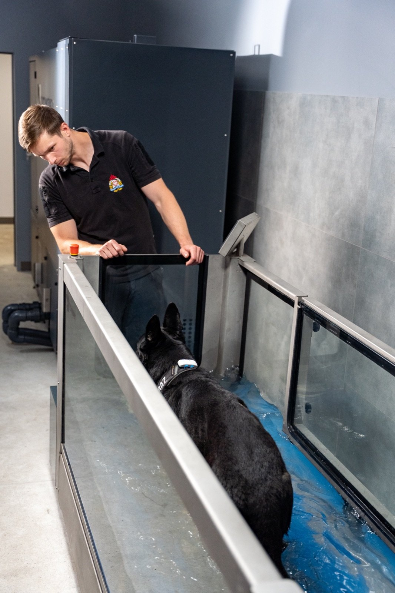
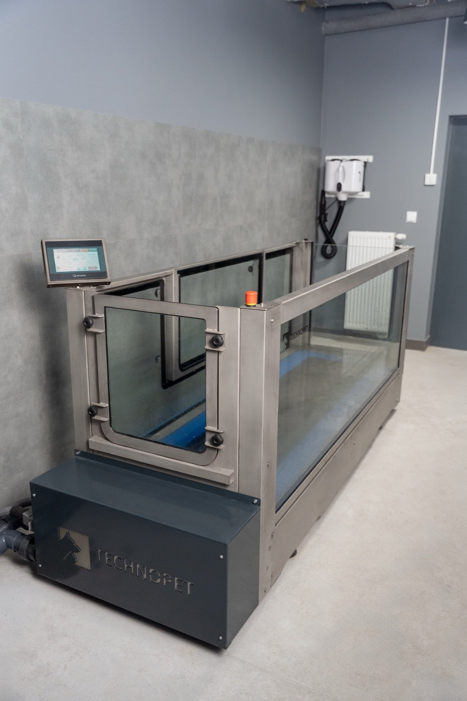
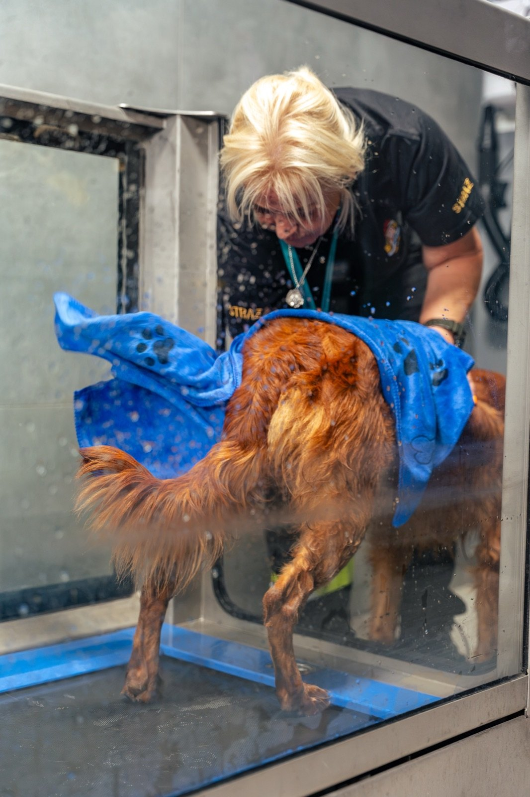
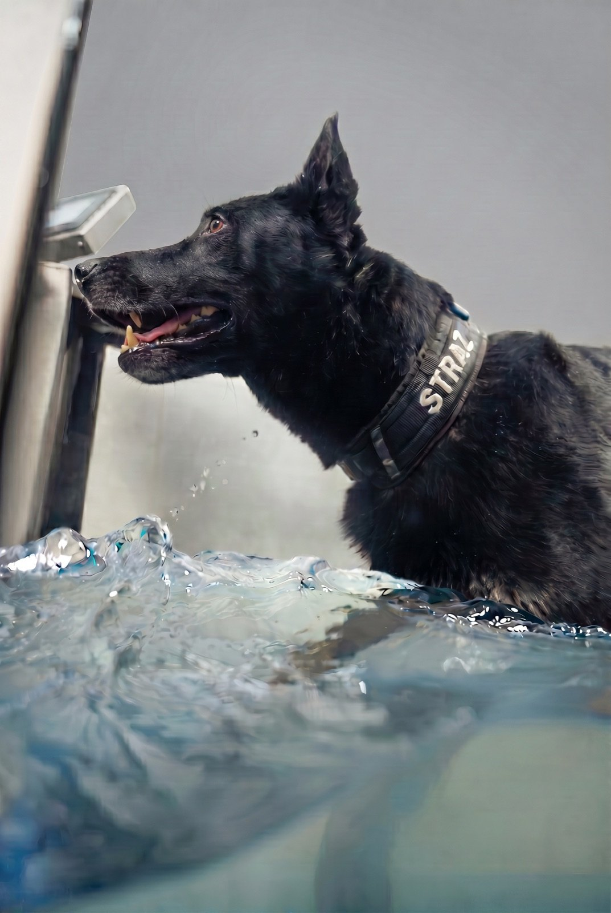
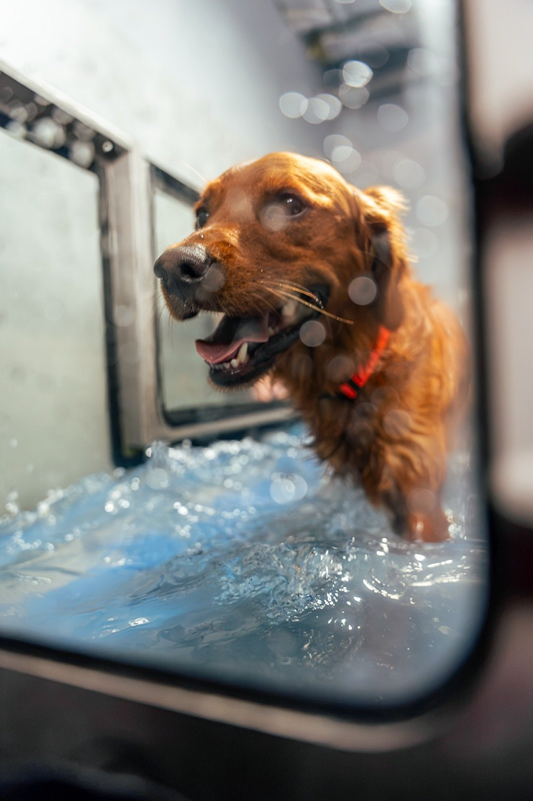

Stainless steel construction · 2100 × 800 mm chamber · for dogs up to 90 kg
Less manual work for your team between patients: the water and belt are controlled from one panel, and the unit brings the water to your chosen level automatically. With remote diagnostics, some technical problems can be resolved without a service visit.
Ask if it suits your facilityinfo@petopo.plAt the initial consultation, we discuss the space in your treatment room and the installation requirements.

The therapist can step into the chamber, give manual therapy and observe the patient’s responses as they happen.
7″ touchscreen, automatic valve control and a digital water level readout.
Industrial-grade bag filter, UV lamp, and precise control of water level and temperature. Heat pump water heating is available as an option.
One unit for both dry and in-water training.
The treadmill deck lifts automatically to make cleaning easier, and reminders flag when cleaning and filter changes are due.
Stainless steel throughout; the manufacturer states it uses industrial-grade components.

Supports recovery after injury and surgery, as well as work with older dogs and dogs with impaired mobility or degenerative conditions.

Builds fitness, stamina and strength in sporting, working and breeding dogs, including police and search-and-rescue dogs.

Safe exercise for senior, large-breed, overweight and family dogs, helping them stay in condition with less strain.
The base model is built from stainless steel, with automatic control and a 7″ touchscreen. Designed and made in Poland.
These include a heat pump, a spa option, a walk-through version and a colour from the RAL range, each priced in your quote. Custom builds are quoted individually.
We start with a consultation and choose the configuration with you. Delivery, installation, team training and servicing are to be confirmed for your country. The unit supports remote diagnostics.
No. The system supports rehabilitation, hydrotherapy, functional training, conditioning, recovery and preventive care. It is suited to veterinary clinics, animal physiotherapy practices, dog training centres, breeders, grooming salons and organisations that work with police, search-and-rescue and other working dogs.
Yes. The design allows a person to get inside the treadmill. This makes it possible to give manual therapy, support a correct movement pattern and observe how the dog responds, while the dog feels more comfortable and secure in the water.
The price is available on request and depends on your configuration. Options such as a heat pump, an ozone generator, an additional biological filter and a therapist’s seat are priced separately. Custom builds are quoted individually.
Yes. Every project starts with a needs assessment. We choose the configuration to suit your available space, how you plan to use the treadmill and the nature of your work.
A doorway at least 900 mm wide and a room measuring at least 4500 × 3700 mm. A running water supply ending in a quick-release coupling, a 3″ waste drain no more than 30 cm from the treadmill and a 25 × 25 cm floor gully by the water treatment system. Power supply: 220 V / 50 Hz / 16 A, with an earthed socket by the control panel.
Draining the storage tank to waste takes about 5–6 minutes, and filling it with fresh water about 30–50 minutes, depending on your water pressure. Emptying the treadmill and refilling it with water from the storage tank takes 4–5 minutes at most.
The process starts with a consultation and a choice of configuration. Delivery, installation, team training, servicing and the supply of spare parts are to be confirmed for your country. With remote diagnostics, some problems can be resolved without a service visit.
We tailor the configuration to your space, your intended use and the nature of your work.